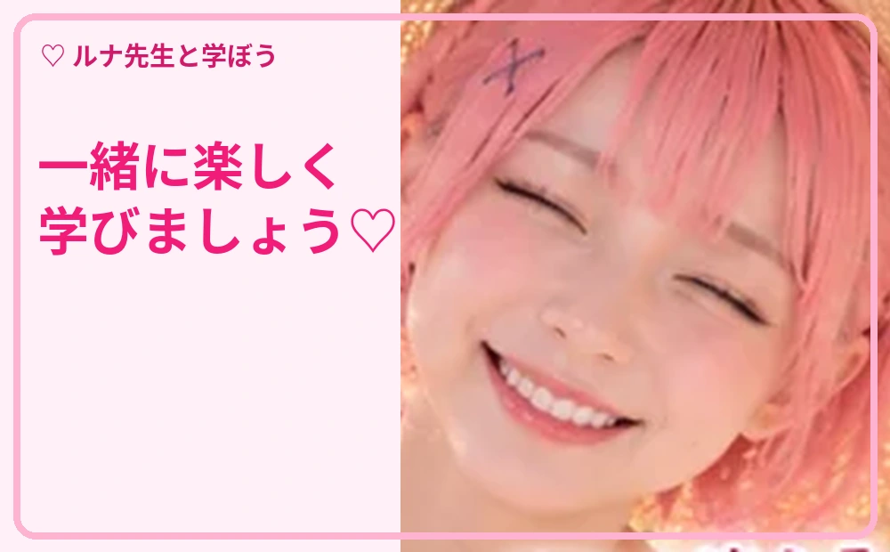
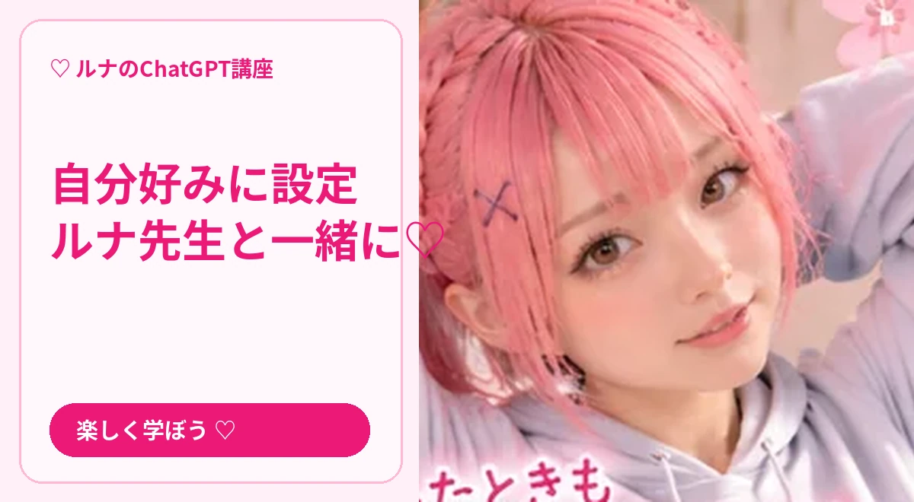

第2回 記憶とカスタマイズ
ルナ先生と一緒に、実際の操作を順番に学びましょう。質問文はコピーして使えます。

STEP 01
応答スタイルを設定
ルナ先生からの解説 🌸 設定の「パーソナライズ」などから、好みの話し方や指示を調整できます。項目名は更新されることがあります。
🖱️ 操作の手順
- プロフィールメニューから設定を開きます。
- パーソナライズ関連の項目を探します。
- 希望する話し方や回答の長さを指定します。
- 新しい会話で反映を確かめます。
📋 そのまま使える質問文
これからは日本語で、専門用語をかみ砕き、操作手順を番号付きで説明してください。
STEP 02
メモリの考え方
ルナ先生からの解説 🌸 ChatGPTは利用設定に応じて、会話の情報を今後の回答に活用する場合があります。記憶の管理や無効化は設定から確認します。
🖱️ 操作の手順
- 設定→パーソナライズを開きます。
- メモリの有効・無効を確認します。
- メモリの要約や管理項目がある場合は内容を確認します。
- 覚えてほしくない情報は共有しないことが基本です。
📋 そのまま使える質問文
私に合わせて回答するため、必要な好みを3つだけ質問してください。

STEP 03
音声で話す
ルナ先生からの解説 🌸 対応環境では音声会話が利用できます。音声の種類や機能は端末・プランによって異なります。
🖱️ 操作の手順
- ChatGPTを開き、音声のアイコンを探します。
- マイクの利用許可を確認します。
- 話しかけて返事を聞きます。
- 周囲の人の声や個人情報が入らないよう注意します。
📋 そのまま使える質問文
音声会話で英会話の練習をしたいです。短い質問を一つずつしてください。

STEP 04
自分専用の使い方を作る
ルナ先生からの解説 🌸 仕事、勉強、趣味など、目的ごとに「回答のルール」を決めておくと便利です。
🖱️ 操作の手順
- よく使う目的を一つ選びます。
- 役割・対象者・文章の長さを決めます。
- 同じ指示で複数回試して調整します。
📋 そのまま使える質問文
あなたは親切なIT講師です。私が「次」と言うまで一度に1手順だけ教えてください。